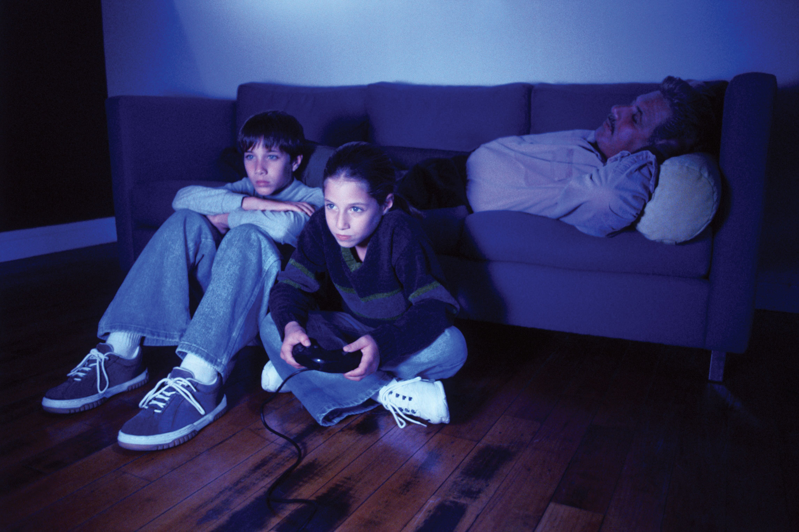

The increasing realism and expanded possibilities of video games has inspired a great deal of controversy. However, even early games, though rudimentary and seemingly laughable nowadays, raised controversy over their depiction of adult themes. Although increased realism and graphics capabilities of contemporary video games have increased the shock value of in-game violence, international culture has been struggling to come to terms with video game violence since the dawn of video games.
Violence in video games has been controversial from their earliest days. Death RaceA 1978 arcade game that drew protest over its depiction of violence., an arcade game released in 1976, encouraged drivers to run over stick figures, which then turned into Xs. Although the programmers claimed that the stick figures were not human, the game was controversial, making national news on the television talk show Donahue and the television news magazine 60 Minutes. Video games, regardless of their realism or lack thereof, had added a new potential to the world of games and entertainment: the ability to simulate murder.
The enhanced realism of video games in the 1990s accompanied a rise in violent games as companies expanded the market to target older demographics. A great deal of controversy exists over the influence of this kind of violence on children, and also over the rating system that is applied to video games. There are many stories of real-life violent acts involving video games. The 1999 Columbine High School massacreThe 1999 high school shooting that many people connected with the first-person shooter genre of video games. was quickly linked to the teenage perpetrators’ enthusiasm for video games. The families of Columbine victims brought a lawsuit against 25 video game companies, claiming that if the games had not existed, the massacre would not have happened.Mark Ward, “Columbine Families Sue Computer Game Makers,” BBC News, May 1, 2001, http://news.bbc.co.uk/2/hi/science/nature/1295920.stm. In 2008, a 17-year-old boy shot his parents after they took away his video game system, killing his mother.Mike Harvey, “Teenager Daniel Petric Shot Parents Who Took Away Xbox,” Times (London), January 13, 2009, http://www.timesonline.co.uk/tol/news/world/us_and_americas/article5512446.ece. Also in 2008, when 6 teens were arrested for attempted carjacking and robbery, they stated that they were reenacting scenes from Grand Theft Auto.Lee Cochran, “Teens Say: Video Game Made Them Do It,” ABC News, June 27, 2008, http://abcnews.go.com/TheLaw/story?id=5262689.
There is no shortage of news stories that involve young men commiting crimes relating to an obsession with video games. The controversy has not been resolved regarding the influences behind these crimes. Many studies have linked aggression to video games; however, critics take issue with using the results of these studies to claim that the video games caused the aggression. They point out that people who enact video-game–related crimes already have psychopathic tendencies, and that the results of such research studies are correlational rather than causational—a naturally violent person is drawn to play violent video games.Jill U. Adams, “A Closer Look: Effects of Violent Video Games,” Los Angeles Times, May 3, 2010, http://www.latimes.com/news/health/la-he-closer-20100503,0,5586471.story. Other critics point out that violent games are designed for adults, just as violent movies are, and that parents should enforce stricter standards for their children.
The problem of children’s access to violent games is a large and complex one. Video games present difficult issues for those who create the ratings. One problem is the inconsistency that seems to exist in rating video games and movies. Movies with violence or sexual themes are rated either R or NC-17. Filmmakers prefer the R rating over the NC-17 rating because NC-17 ratings hurt box office sales, and they will often heavily edit films to remove overly graphic content. The Entertainment Software Rating Board (ESRB)The organization that creates ratings for video games., rates video games. The two most restrictive ratings the ESRB has put forth are “M” (for Mature; 17 and older; “may contain mature sexual themes, more intense violence, and/or strong language”) and “AO” (for Adults Only; 18 and up; “may include graphic depictions of sex and/or violence”). If this rating system were applied to movies, a great deal of movies now rated R would be labeled AO. An AO label can have a devastating effect on game sales; in fact, many retail outlets will not sell games with an AO rating.Paul Hyman, “Video Game Rating Board Don’t Get No Respect,” Hollywood Reporter, April 8, 2005, http://www.hollywoodreporter.com/hr/search/article_display.jsp?vnu_content_id=1000874859. This creates a situation where a video game with a sexual or violent scene as graphic as the ones seen in R-rated movies is difficult to purchase, whereas a pornographic magazine can be bought at many convenience stores. This issue reveals a unique aspect of video games. Although many of them are designed for adults, the distribution system and culture surrounding video games is still largely youth-oriented.
Another controversial issue is the problem of video game addiction. As of the print date, the American Medical Association (AMA) has not created an official diagnosis of video game addiction, citing the lack of long-term research. However, the AMA uses the term “video game overuseThe term used in lieu of “video game addiction” by the American Medical Association while further research is conducted to determine the correct classification.” to describe video game use that begins to affect other aspects of an individual’s life, such as relationships and health. Studies have found that socially marginalized people have more of a tendency to overuse games, especially online role-playing games like World of Warcraft. Other studies have found that patterns of time usage and social dysfunction in players who overuse games are similar to those of other addictive disorders.Mohamed Khan, Emotional and Behavioral Effects of Video Games and Internet Overuse, American Medical Association, Council on Science and Public Health, 2007, http://www.ama-assn.org/ama1/pub/upload/mm/443/csaph12a07-fulltext.pdf.
Figure 10.8
Video game use can become an obsession with some people.
Groups such as Online Gamers Anonymous have developed a 12-step program similar to that of Alcoholics Anonymous to help gamers deal with problems relating to game overuse. This group is run by former online gamers and family members of those affected by heavy game use.On-line Gamers Anonymous, “About OLGA & OLG-Anon,” http://www.olganon.org. This problem is not new, but it has become more prevalent. In the early 1990s, many stories surfaced of individuals dropping out of college or getting divorced because of addiction to MUDs.R. W. Greene, “Is Internet Addiction for Worrywarts or a Genuine Problem?” CNN, September 23, 1998, http://www.cnn.com/TECH/computing/9809/23/netaddict.idg/index.html. In addition, heavy video gaming, much like heavy computer use in an office setting, can result in painful repetitive stress injuries. Even worse are the rare, but serious, cases of death resulting from video game overuse. In the early 1980s, two deaths were linked to the video game Berzerk. The players, both in their late teens, suffered fatal heart attacks while struggling to achieve top scores.Arcade History, “Berzerk, the Video Game,” http://www.arcade-history.com/?n=berzerk&page=detail&id=236. The issue of video game addiction has become a larger one because of the ubiquity of video games and Internet technology. In countries that have a heavily wired infrastructure, such as South Korea, the problem is even bigger. In 2010, excessive game use was problematic enough that the South Korean government imposed an online gaming curfew for people under the age of 18 that would block certain sites after midnight. This decision followed the death of a 3-month-old baby from starvation while her parents played an online game at an Internet café.Geoffrey Cain, “South Korea Cracks Down on Gaming Addiction,” Time, April 20, 2010, http://www.time.com/time/world/article/0,8599,1983234,00.html.
Another side of video game addiction is told well by Jim Rossignol in his book This Gaming Life: Travels in Three Cities. The book describes Rossignol’s job as a journalist for a financial company and his increasing involvement with Quake III. Rossignol trained a team of players to compete in virtual online tournaments, scheduling practices and spending the hours afterward analyzing strategies with his teammates. His intense involvement in the game led to poor performance at his job, and he was eventually fired. After being fired, he spent even more time on the game, not caring about his lack of a job or shrinking savings. The story up to this point sounds like a testimonial about the dangers of game addiction. However, because of his expertise in the game, he was hired by a games magazine and enjoyed full-time employment writing about what he loved doing. Rossignol does not gloss over the fact that games can have a negative influence, but his book speaks to the ways in which gaming—often what would be described as obsessive gaming—can cause positive change in people’s lives.Jim Rossignol, This Gaming Life: Travels in Three Cities (Ann Arbor, MI: University of Michigan Press, 2008), 4–11.
Figure 10.9
Games such as Tomb Raider and Dead or Alive Xtreme have been criticized for their demeaning depiction of women.
It is no secret that young adult men make up the majority of video gamers. A study in 2009 found that 60 percent of gamers were male, and the average age of players was 35.Entertainment Software Association, Essential Facts About the Computer and Video Game Industry: 2009. While the gender gap has certainly narrowed in the past 30 years, video gaming is still in many ways a male-dominated medium.
Male influence can be seen throughout the industry. Women make up less than 12 percent of game designers and programmers, and those who do enter the field often find themselves facing subtle—and not so subtle—sexism.Media Awareness Network, “Gender Stereotyping,” http://www.media-awareness.ca/english/parents/video_games/concerns/gender_videogames.cfm. When Game Developer magazine released its list of top 50 people in the video game industry for 2010, bloggers were quick to note that no female developers appeared in the list.Cory Doctorow, “Gamasutra’s Most Important Gamers List Is a Boy’s Club,” BoingBoing (blog), April 14, 2010, http://boingboing.net/2010/04/14/gamasutras-most-impo.html. In 2007, scandal erupted over a pornographic comic featuring Jade Raymond, current managing director of the French video game publisher Ubisoft, that surfaced on an online forum. The motivation behind the comic was to allege that Raymond did not deserve her position at Ubisoft because she earned it based on her looks, rather than on her abilities and experience.
Sexism in video games has existed since the early days of the medium. The plot of the infamous Custer’s Revenge, released for the Atari 2600 in 1982, centered on the rape of a Native American woman. Popular NES games such as Super Mario Bros. and The Legend of Zelda featured a male figure rescuing a damsel in distress. Both the protagonist and antagonist in the original Tomb Raider game had hourglass figures with prominent busts and nonexistent waists, a trend that continues in the franchise today. In 2003, the fighting series Dead or Alive released a spin-off game titled Dead or Alive Xtreme Beach Volleyball that existed to showcase the well-endowed female characters in swim attire.Michael Strauss, “A Look at Female Characters in Video Games,” Associated Content, July 16, 2010, http://www.associatedcontent.com/article/5487226/a_look_at_female_characters_in_video_pg2.html?cat=19. The spin-off was so popular that two more similar games were released.
Some note that video games are not unique in their demeaning portrayal of women. Like movies, television, and other media forms, video games often fall back on gender stereotyping in order to engage consumers. Defenders point out that many male video game characters are also depicted lewdly. Games such as God of War and Mortal Kombat feature hypersexualized men with bulging muscles and aggressive personalities who rely on their brawn rather than their brains. How are men affected by these stereotypes? Laboratory studies have shown that violence and aggression in video games affect men more than women, leading to higher levels of male aggression.Bruce D. Bartholow and Craig A. Anderson, “Effects of Violent Video Games on Aggressive Behavior: Potential Sex Differences,” Journal of Experimental Social Psychology 38, no. 3 (2002): 283–290. While sexism is certainly present in video games, it seems sexual stereotyping affects both genders negatively.
In recent years, game designers have sought to move away from these clichéd representations of gender. The popular game Portal, released in 2007, features a female protagonist clad in a simple orange jumpsuit who relies on her wits to solve logic puzzles. Series such as Half-Life and Phoenix Wright: Ace Attorney star male heroes who are intellectuals instead of warriors. Other games, like the Mass Effect series and Halo: Reach, allow gamers to choose the gender of the main character without altering elements of the plot or game-play. However, despite recent strides forward, there is no doubt that as the video game industry continues to evolve, so too will the issue of gender.
Choose video game violence or video game addiction and search for it on the Internet. Examine the research that is associated with the issue you chose. Then consider the following questions: